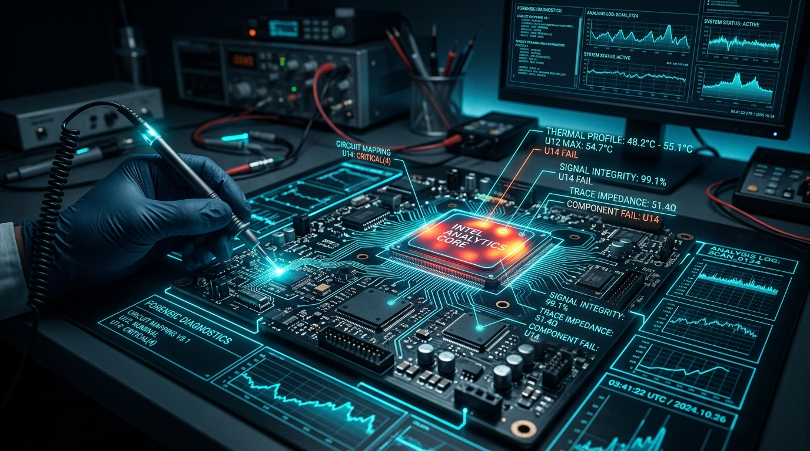

Elektrik-elektronik, enerji, dijital delil, siber güvenlik, yangın ve adli hesap uyuşmazlıklarına ilişkin gerçek saha tecrübelerine dayalı anonimleştirilmiş vaka incelemeleri.

Henüz Yayınlanmış Vaka Analizi Bulunmamaktadır
Saha ve laboratuvar incelemelerine dayalı anonim vaka raporları çok yakında bu alanda yayınlanacaktır.